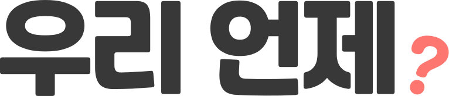

<!doctype html>
<html lang="ko">
<head>
  <meta charset="utf-8" />
  <meta name="viewport" content="width=device-width,initial-scale=1" />
  <title>우리 언제? · Mobile UI Kit</title>
  <link rel="icon" type="image/svg+xml" href="../../assets/favicon.svg" />
  <link rel="stylesheet" href="styles.css" />
  <style>
    /* Stage that hosts the phone — desktop-friendly, but the screen
       inside is mobile-sized. */
    .stage {
      min-height: 100vh;
      background: linear-gradient(180deg, #EEF1F5 0%, #E5EAF0 100%);
      padding: 32px 16px 80px;
      display: flex;
      flex-direction: column;
      align-items: center;
      gap: 24px;
    }

    .kit-header {
      width: 100%; max-width: 980px;
      display: flex; align-items: center; gap: 14px;
    }
    .kit-header .title-block { flex: 1; min-width: 0; }
    .kit-header h1 {
      margin: 0; font-size: 22px; font-weight: 800;
      letter-spacing: -0.03em;
    }
    .kit-header .sub {
      font-size: 13px; color: #6B7280;
      margin-top: 2px; letter-spacing: -0.01em;
    }

    /* Screen tabs — let the viewer jump between flow stages. */
    .nav-tabs {
      width: 100%; max-width: 980px;
      display: flex; gap: 6px; overflow-x: auto;
      padding-bottom: 4px;
    }
    .nav-tabs button {
      flex: none;
      height: 36px; padding: 0 14px;
      background: #fff; border: 1px solid #E5E7EB;
      color: #333; font-family: inherit;
      font-size: 13px; font-weight: 700;
      letter-spacing: -0.015em;
      white-space: nowrap;
      border-radius: 999px; cursor: pointer;
      display: inline-flex; align-items: center; gap: 6px;
      transition: background 160ms, color 160ms, border-color 160ms;
    }
    .nav-tabs button:hover { border-color: #1A9562; color: #1A9562; }
    .nav-tabs button.active {
      background: var(--color-primary-soft);
      border-color: var(--color-primary);
      color: var(--color-primary);
    }
    .nav-tabs button .step {
      font-size: 11px; font-weight: 800;
      width: 18px; height: 18px; border-radius: 999px;
      background: rgba(0,0,0,0.06); color: inherit;
      display: inline-flex; align-items: center; justify-content: center;
    }
    .nav-tabs button.active .step {
      background: var(--color-primary); color: #fff;
    }

    /* Custom phone shell — cleaner than wrestling the iOS frame. */
    .phone {
      width: 390px;
      height: 780px;
      background: #111;
      border-radius: 50px;
      padding: 12px;
      box-shadow:
        0 30px 60px -20px rgba(17,24,39,0.25),
        0 0 0 1px rgba(17,24,39,0.06);
      position: relative;
      overflow: hidden;
    }
    .phone .notch {
      position: absolute;
      top: 22px; left: 50%; transform: translateX(-50%);
      width: 110px; height: 30px;
      background: #111; border-radius: 999px;
      z-index: 10; pointer-events: none;
    }
    .phone .screen-host {
      width: 100%; height: 100%;
      background: var(--color-bg);
      border-radius: 38px;
      overflow: hidden;
      position: relative;
      display: flex; flex-direction: column;
    }
    .phone .status-bar {
      height: 44px;
      display: flex; align-items: center; justify-content: space-between;
      padding: 0 28px;
      font-size: 14px; font-weight: 700; letter-spacing: -0.01em;
      flex: none;
    }
    .phone .home-indicator {
      position: absolute; bottom: 6px; left: 50%; transform: translateX(-50%);
      width: 130px; height: 5px; border-radius: 999px;
      background: #111; opacity: 0.85; pointer-events: none; z-index: 11;
    }
    .phone .app-host {
      flex: 1; min-height: 0;
      display: flex; flex-direction: column;
      position: relative;
      overflow: hidden;
    }

    /* Toast for fake actions */
    .toast {
      position: fixed; left: 50%; bottom: 24px;
      transform: translateX(-50%);
      background: rgba(17,24,39,0.92); color: #fff;
      padding: 10px 16px; border-radius: 999px;
      font-size: 13px; font-weight: 600; letter-spacing: -0.01em;
      z-index: 50;
      animation: toast 1.8s ease forwards;
      pointer-events: none;
    }
    @keyframes toast {
      0%  { opacity: 0; transform: translate(-50%, 6px); }
      15% { opacity: 1; transform: translate(-50%, 0); }
      85% { opacity: 1; transform: translate(-50%, 0); }
      100% { opacity: 0; transform: translate(-50%, -6px); }
    }
  </style>
</head>
<body>
  <div id="root"></div>

  <script src="https://unpkg.com/react@18.3.1/umd/react.development.js" integrity="sha384-hD6/rw4ppMLGNu3tX5cjIb+uRZ7UkRJ6BPkLpg4hAu/6onKUg4lLsHAs9EBPT82L" crossorigin="anonymous"></script>
  <script src="https://unpkg.com/react-dom@18.3.1/umd/react-dom.development.js" integrity="sha384-u6aeetuaXnQ38mYT8rp6sbXaQe3NL9t+IBXmnYxwkUI2Hw4bsp2Wvmx4yRQF1uAm" crossorigin="anonymous"></script>
  <script src="https://unpkg.com/@babel/standalone@7.29.0/babel.min.js" integrity="sha384-m08KidiNqLdpJqLq95G/LEi8Qvjl/xUYll3QILypMoQ65QorJ9Lvtp2RXYGBFj1y" crossorigin="anonymous"></script>

  <!-- Order matters: primitives, then individual screens, then app. -->
  <script type="text/babel" src="Primitives.jsx"></script>
  <script type="text/babel" src="TimeSelect.jsx"></script>
  <script type="text/babel" src="Recommendations.jsx"></script>
  <script type="text/babel" src="OtherScreens.jsx"></script>
  <script type="text/babel" src="Wizard.jsx"></script>
  <script type="text/babel" src="MyMeetings.jsx"></script>

  <script type="text/babel">
    const { useState, useEffect } = React;

    const FLOWS = {
      participant: {
        label: "참여자",
        screens: [
          { id: "landing",   label: "Landing",         step: "0" },
          { id: "invite",    label: "Invite / Join",   step: "1" },
          { id: "select",    label: "Time select",     step: "2" },
          { id: "submitted", label: "Submitted",       step: "3" },
          { id: "recs",      label: "Recommendations", step: "4" },
          { id: "final",     label: "Confirmed",       step: "5" },
        ],
      },
      host: {
        label: "모임장",
        screens: [
          { id: "myMeetings", label: "My Meetings",    step: "0" },
          { id: "wizard",     label: "Create Wizard",  step: "1" },
          { id: "recs",       label: "Recommendations",step: "2" },
          { id: "final",      label: "Confirmed",      step: "3" },
        ],
      },
    };

    function StatusBar() {
      return (
        <div className="status-bar">
          <span>9:41</span>
          <span style={{ display: "inline-flex", gap: 6, alignItems: "center", fontSize: 12 }}>
            <svg width="18" height="11" viewBox="0 0 18 12"><g fill="#111"><rect x="0" y="6" width="2.5" height="5" rx="1"/><rect x="4" y="4" width="2.5" height="7" rx="1"/><rect x="8" y="2" width="2.5" height="9" rx="1"/><rect x="12" y="0" width="2.5" height="11" rx="1"/></g></svg>
            <svg width="22" height="10" viewBox="0 0 22 12"><rect x="0.5" y="0.5" width="18" height="11" rx="2.5" fill="none" stroke="#111"/><rect x="2" y="2" width="13" height="8" rx="1.5" fill="#111"/><rect x="19" y="3.5" width="2" height="5" rx="1" fill="#111"/></svg>
          </span>
        </div>
      );
    }

    function FlowSwitcher({ flow, onChange }) {
      return (
        <div style={{
          display: "inline-flex", background: "#fff",
          border: "1px solid #E5E7EB", padding: 4, borderRadius: 999, gap: 2,
        }}>
          {Object.entries(FLOWS).map(([id, f]) => (
            <button key={id}
              onClick={() => onChange(id)}
              style={{
                height: 32, padding: "0 14px",
                background: flow === id ? "var(--color-primary-soft)" : "transparent",
                color:      flow === id ? "var(--color-primary)" : "var(--color-text-2)",
                border: flow === id ? "1px solid var(--color-primary)" : "1px solid transparent",
                borderRadius: 999, cursor: "pointer",
                fontFamily: "inherit", fontSize: 13, fontWeight: 700, letterSpacing: "-0.015em",
                whiteSpace: "nowrap",
                transition: "background 160ms",
              }}>{f.label} 플로우</button>
          ))}
        </div>
      );
    }

    function App() {
      const [flow, setFlow] = useState("participant");
      const [screen, setScreen] = useState("landing");
      const [toast, setToast] = useState(null);

      const fireToast = (msg) => setToast({ msg, n: Date.now() });
      const go = (id) => setScreen(id);

      const onFlowChange = (next) => {
        setFlow(next);
        setScreen(FLOWS[next].screens[0].id);
      };

      const screenEl = (() => {
        switch (screen) {
          // ----- participant -----
          case "landing":
            return <Landing
              onCreate={() => { setFlow("host"); setScreen("wizard"); }}
              onJoin={() => go("invite")} />;
          case "invite":
            return <InviteJoin onBack={() => go("landing")} onStart={(n) => { fireToast(`${n || "익명"}으로 참여를 시작했어요`); go("select"); }} />;
          case "select":
            return <TimeSelect onBack={() => go("invite")} onSubmit={() => go("submitted")} />;
          case "submitted":
            return <Submitted onEdit={() => go("select")} onClose={() => go("recs")} />;

          // ----- host -----
          case "myMeetings":
            return <MyMeetings
              onBack={() => { setFlow("participant"); setScreen("landing"); }}
              onCreate={() => go("wizard")}
              onOpen={() => go("recs")} />;
          case "wizard":
            return <Wizard
              onBack={() => go("myMeetings")}
              onDone={() => go("recs")} />;

          // ----- shared -----
          case "recs":
            return <Recommendations
              onBack={() => go(flow === "host" ? "myMeetings" : "submitted")}
              onConfirm={() => { fireToast("이 시간으로 확정했어요"); go("final"); }} />;
          case "final":
            return <FinalSummary
              onBack={() => go("recs")}
              onCopy={() => fireToast("공유 링크를 복사했어요")} />;
          default:
            return null;
        }
      })();

      return (
        <div className="stage">
          <div className="kit-header">
            
            <div className="title-block">
              <h1>Mobile UI Kit · 참여자 + 모임장 플로우</h1>
              <div className="sub">두 플로우를 토글해서 따라가보세요. 화면 안에서 진행해도 되고, 탭으로 직접 이동해도 됩니다.</div>
            </div>
            <FlowSwitcher flow={flow} onChange={onFlowChange} />
          </div>

          <div className="nav-tabs">
            {FLOWS[flow].screens.map(s => (
              <button key={s.id}
                className={screen === s.id ? "active" : ""}
                onClick={() => go(s.id)}>
                <span className="step">{s.step}</span>{s.label}
              </button>
            ))}
          </div>

          <div className="phone">
            <div className="screen-host">
              <StatusBar />
              <div className="app-host">{screenEl}</div>
              <div className="home-indicator" />
            </div>
            <div className="notch" />
          </div>

          {toast && (
            <div key={toast.n} className="toast" onAnimationEnd={() => setToast(null)}>
              {toast.msg}
            </div>
          )}
        </div>
      );
    }

    ReactDOM.createRoot(document.getElementById("root")).render(<App />);
  </script>
</body>
</html>
